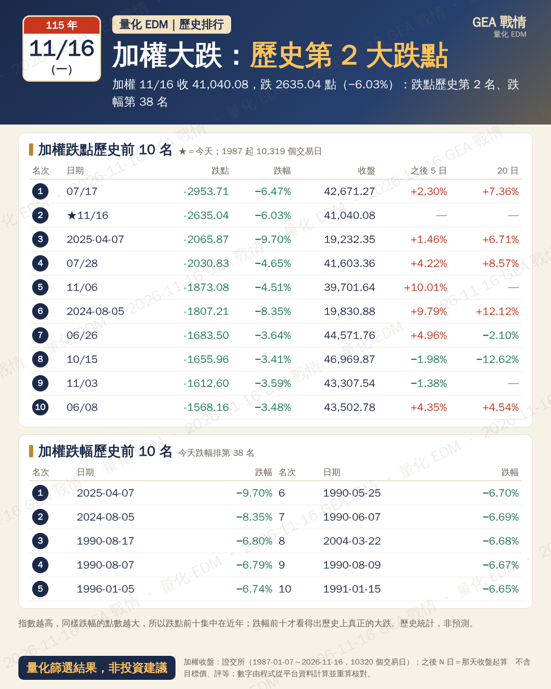
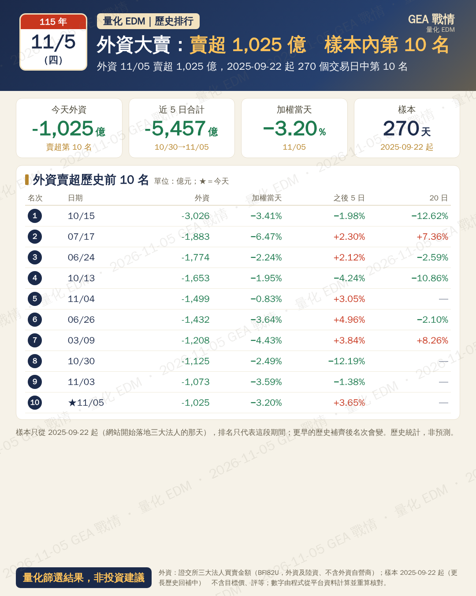
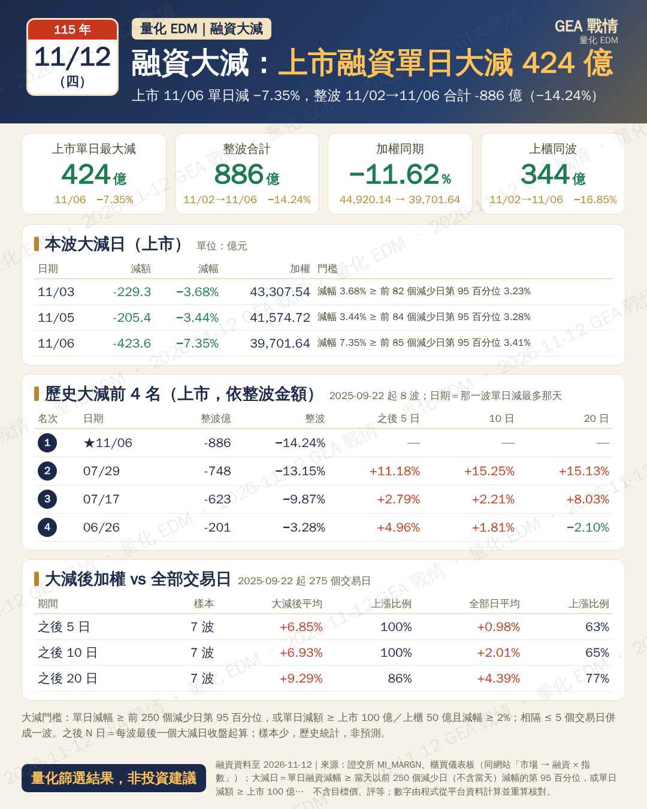
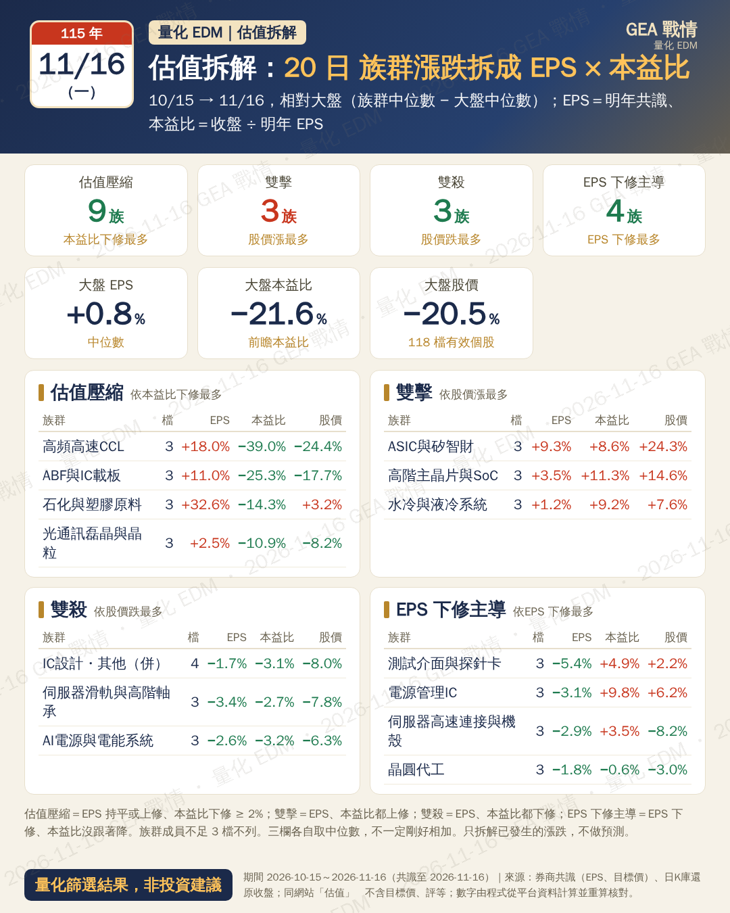

EDM 預覽：歷史排行事件卡（加權大跌、外資大賣）、融資大減日、估值拆解（族群）、上櫃借券賣出餘額變化（正式版同一段程式）
要看的重點
- 歷史排行事件卡（Evans 11-16）：今天在全部歷史樣本排進前 10 名才出卡，表列前 10 名、★＝今天；之後 5／20 日用加權收盤算
- 加權大跌：1987 起，跌點、跌幅各一張前十（指數越高跌點越大，所以兩張都列）
- 外資大賣：樣本只從 2025-09-22 起（網站落地三大法人那天）；更長歷史要 W 本機用 BFI82U 慢補，補完名次會變
- 融資大減：歷次大減改成「歷史大減前十（依整波金額）」；樣本＝mkt_overlay 上市融資序列起點
- 事件卡各示範一天出卡、一天不出；數字都用另一份原始資料重算核對，沒過那張不出
- 沒有 force 類參數：預覽跟正式版走同一段 build()；Evans 點頭才接進每日戰情更新
加權大跌歷史前十（示範：條件成立，資料日 2026-11-16 出卡）下載 PNG


核對通過 csv 與 FMTQIK 重疊 75 天收盤一致、76 天漲跌點＝官方；今天收盤再跟 taiex_ohlc、web_data 核對
・正式版同一段 build()
・正式版同一段 build()
加權大跌歷史前十（示範：條件不成立，資料日 2026-11-13 不出）下載 PNG

核對通過 不出卡
・正式版同一段 build()，這天不出
・原因：資料日 2026-11-13 跌點第 10255 名、跌幅第 8806 名（都不在前 10）
・正式版同一段 build()，這天不出
・原因：資料日 2026-11-13 跌點第 10255 名、跌幅第 8806 名（都不在前 10）
外資大賣歷史前十（示範：條件成立，資料日 2026-11-05 出卡）下載 PNG


核對通過 2026-10 外資合計 -9943.17 億 vs 財政部 -9943.16 億；11/01～11/06 外資合計 -5243.76 億 vs 財政部 -5244.00 億
・正式版同一段 build()
・正式版同一段 build()
外資大賣歷史前十（示範：條件不成立，資料日 2026-11-16 不出）下載 PNG

核對通過 不出卡
・正式版同一段 build()，這天不出
・原因：資料日 2026-11-16 外資 -702 億，賣超第 36 名（不在前 10）
・正式版同一段 build()，這天不出
・原因：資料日 2026-11-16 外資 -702 億，賣超第 36 名（不在前 10）
融資大減（示範：條件成立，資料日 2026-11-12 出卡）下載 PNG


核對通過 上市 大減日 3 天另一份來源重算一致、13 天另一份沒資料；上櫃 大減日 6 天另一份來源重算一致、0 天另一份沒資料
・正式版同一段 build()
・正式版同一段 build()
融資大減（示範：條件不成立，資料日 2026-11-16 不出）下載 PNG

核對通過 不出卡
・正式版同一段 build()，這天不出
・原因：上市最近一個大減日 2026-11-06、上櫃 2026-11-06，都不在融資序列最後 5 個交易日內
・正式版同一段 build()，這天不出
・原因：上市最近一個大減日 2026-11-06、上櫃 2026-11-06，都不在融資序列最後 5 個交易日內
估值拆解（資料日 2026-11-16）下載 PNG


核對通過 14 個族群用成員兩端原始數字重算中位數、重判狀態；43 檔期末收盤對 daily.npz
・正式版同一段 build()
・正式版同一段 build()
上櫃借券（資料日 2026-11-16）下載 PNG

核對通過 818 檔餘額恆等式（前日＋賣出−還券＋調整）重算、12 檔前日餘額對前一份檔、10 檔收盤對 stock_bars
・正式版同一段 build()
・正式版同一段 build()